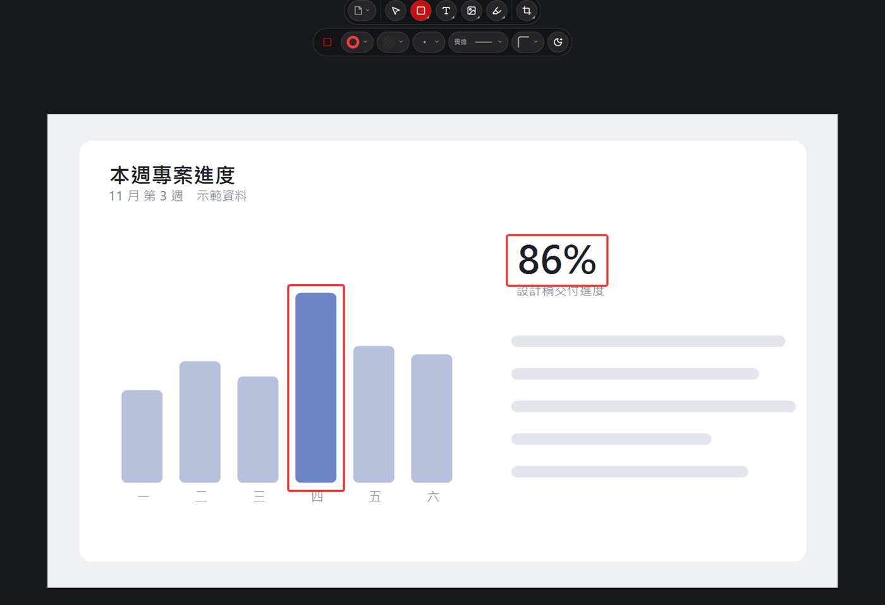

Capture, mark up, send
- Press the capture hotkey, drag to frame the area, release the left button.
- Click the notification at the bottom right to mark it up: arrows, boxes, text, speech bubbles, blur.
- Press Save, then paste it into LINE or an email.
